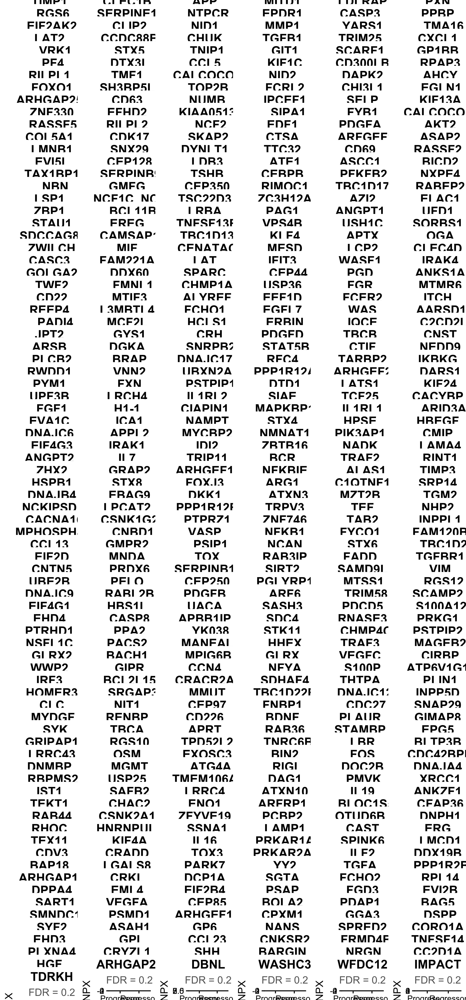
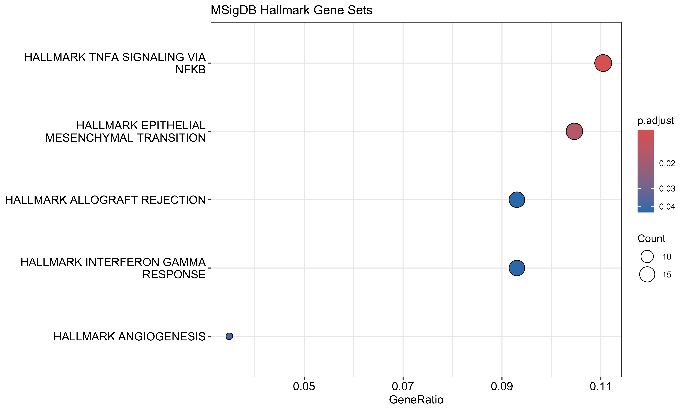
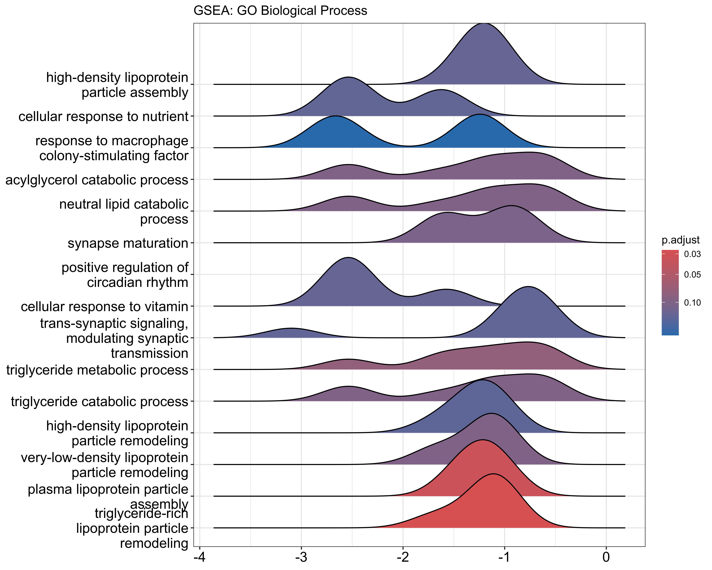
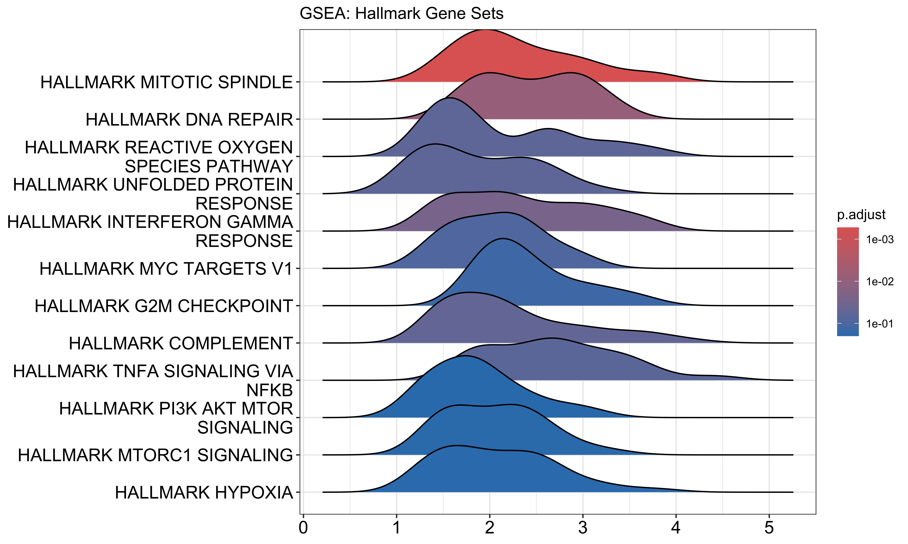
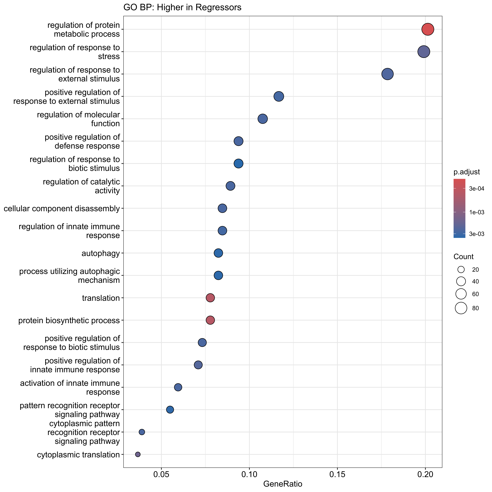

Pathway Enrichment Analysis (Analysis D)
Analysis Script
2026-07-09
Last updated: 2026-07-09
Checks: 7 0
Knit directory: RESOLVE_SerumProteomics/
This reproducible R Markdown analysis was created with workflowr (version 1.7.2). The Checks tab describes the reproducibility checks that were applied when the results were created. The Past versions tab lists the development history.
Great! Since the R Markdown file has been committed to the Git repository, you know the exact version of the code that produced these results.
Great job! The global environment was empty. Objects defined in the global environment can affect the analysis in your R Markdown file in unknown ways. For reproduciblity it’s best to always run the code in an empty environment.
The command set.seed(20250204) was run prior to running
the code in the R Markdown file. Setting a seed ensures that any results
that rely on randomness, e.g. subsampling or permutations, are
reproducible.
Great job! Recording the operating system, R version, and package versions is critical for reproducibility.
Nice! There were no cached chunks for this analysis, so you can be confident that you successfully produced the results during this run.
Great job! Using relative paths to the files within your workflowr project makes it easier to run your code on other machines.
Great! You are using Git for version control. Tracking code development and connecting the code version to the results is critical for reproducibility.
The results in this page were generated with repository version 8155d7a. See the Past versions tab to see a history of the changes made to the R Markdown and HTML files.
Note that you need to be careful to ensure that all relevant files for
the analysis have been committed to Git prior to generating the results
(you can use wflow_publish or
wflow_git_commit). workflowr only checks the R Markdown
file, but you know if there are other scripts or data files that it
depends on. Below is the status of the Git repository when the results
were generated:
Ignored files:
Ignored: .DS_Store
Ignored: .Rhistory
Ignored: .Rproj.user/
Ignored: Screenshot-2024-08-22-at-11.31.50_files/
Ignored: analysis/.DS_Store
Ignored: data/.DS_Store
Ignored: output/.DS_Store
Ignored: output/3.1_veSSc_Athritis /
Ignored: output/3.2_veSScarthritis_vs_SScarthritis /
Ignored: output/3.2_veSScarthritis_vs_SScarthritis/
Ignored: output/Analysis_Cosimo/
Untracked files:
Untracked: MRSS_delta_correlations.png
Untracked: analysis/OLD/
Untracked: analysis/SSc_ILD_Onset_Analysis_Clean.Rmd
Untracked: analysis/SSc_ILD_Onset_Pathway_Enrichment.Rmd
Untracked: analysis/output/
Untracked: code/11102024_PreliminaryLook_Preprocessing.Rmd
Untracked: code/14102024_MetaData.csv
Untracked: code/Final_FinalList_ArthritisControls_2024.08.15.xlsx
Untracked: data/ASTRID_ILDonset_PROTEOMIC_CB3groups.xlsx
Untracked: data/ASTRID_ILDonset_PROTEOMIC_COSIMO.xlsx
Untracked: data/Metadata_veSSC.xlsx
Untracked: data/Metadata_veSSC_vs_SSc_arthritis_final.xlsx
Untracked: data/P2024-199-OLI_80_NPX_2024-10-10.parquet
Untracked: data/PEA/
Untracked: data/PRECISE_Pietro.xlsx
Untracked: data/metadata.xlsx
Untracked: output/AnalysisD_PathwayEnrichment/
Untracked: output/ILD_Onset_Analysis/
Untracked: output/Pietro_InterferonScore/
Untracked: output/PreSScArthritis_vs_SScArthritis/
Untracked: output/PreSSc_Synovitis/
Untracked: output/SSc_Skin_Regression_Analysis/
Untracked: output/SSc_veSSc_vs_SSc_Arthritis_Analysis_Clean/
Untracked: output/UpdatedAnalysisPipelineCosimo/
Untracked: output/arthritis_analysis/
Untracked: site_libs/
Unstaged changes:
Modified: .Rprofile
Modified: .gitattributes
Modified: .gitignore
Modified: README.md
Modified: RESOLVE_SerumProteomics.Rproj
Modified: _workflowr.yml
Deleted: analysis/PreSSc/PreSScArthritis_vs_SScArthritis.Rmd
Deleted: analysis/SSc_Skin_Regression_Analysis.Rmd
Modified: analysis/about.Rmd
Modified: analysis/license.Rmd
Modified: code/README.md
Modified: data/README.md
Modified: output/README.md
Note that any generated files, e.g. HTML, png, CSS, etc., are not included in this status report because it is ok for generated content to have uncommitted changes.
These are the previous versions of the repository in which changes were
made to the R Markdown
(analysis/RESOLVE_AnalysisD_PathwayEnrichment.Rmd) and HTML
(docs/RESOLVE_AnalysisD_PathwayEnrichment.html) files. If
you’ve configured a remote Git repository (see
?wflow_git_remote), click on the hyperlinks in the table
below to view the files as they were in that past version.
| File | Version | Author | Date | Message |
|---|---|---|---|---|
| Rmd | 8155d7a | astridhofman7 | 2026-07-09 | Update index and analyses |
Overview
Pathway enrichment analysis on protein hits from the Regressor vs Progressor continuous analysis.
Two approaches for defining hits: 1. FDR < 0.2 — statistical threshold 2. Top 20 proteins — rank-based
# =============================================================================
# REQUIRED PACKAGES
# Install if needed:
# BiocManager::install(c("clusterProfiler", "org.Hs.eg.db", "enrichplot", "ReactomePA"))
# install.packages("msigdbr")
# =============================================================================
library(dplyr)
library(ggplot2)
library(tidyr)
library(here)
library(arrow)
library(readxl)
library(ggpubr)
library(cowplot)
# Enrichment analysis
library(clusterProfiler) # GO, KEGG enrichment
library(org.Hs.eg.db) # Human gene annotation
library(enrichplot) # Visualization
library(ReactomePA) # Reactome pathway analysis
# Gene sets
library(msigdbr) # MSigDB gene sets (Hallmark, etc.)1. Load Results
# =============================================================================
# PURPOSE: Load results from the continuous R vs P analysis
#
# This should be the output from your main analysis script
# =============================================================================
# Load the continuous R vs P results
results <- read.csv(here::here("output", "SSc_Skin_Regression_Analysis", "results_continuous_Regressor_vs_Progressor.csv"))
cat("Loaded", nrow(results), "proteins\n")Loaded 5440 proteinshead(results) logFC AveExpr t P.Value adj.P.Val B OlinkID
1 0.06615767 0.8578918 4.754283 4.923864e-05 0.1577714 1.9047288 OID41368
2 0.06342005 5.3067823 4.487213 1.034549e-04 0.1577714 1.1950575 OID44923
3 0.05514954 0.9012168 4.424263 1.231666e-04 0.1577714 1.0286249 OID45101
4 0.05337350 1.6460913 4.413695 1.268223e-04 0.1577714 1.0007243 OID43399
5 0.07496420 1.6409672 4.234920 2.077200e-04 0.1577714 0.5305965 OID43826
6 0.06945231 0.8220515 4.212173 2.211315e-04 0.1577714 0.4710601 OID42525
Assay
1 KHDRBS3
2 SERPINE2
3 CXCL3
4 AXIN1
5 HTD2
6 GOLGA11.1 Checking the distribution of average expression across the cohort
summary(results$AveExpr) Min. 1st Qu. Median Mean 3rd Qu. Max.
-7.6851 -0.2326 0.2918 0.2888 0.9083 6.5914 hist_plot <- ggplot(data.frame(AveExpr = results$AveExpr), aes(x = AveExpr)) +
geom_histogram(bins = 30, fill = "#3d348b", color = "white", alpha = 0.7) +
geom_vline(xintercept = c(0, 1), linetype = "dashed", color = c("pink", "lightblue")) +
labs(title = "AveExpr Distribution", x = "Average Expression", y = "Count") +
theme_minimal()
ggsave(file.path(output_dir, "AveExpr_histogram.pdf"), hist_plot, width = 8, height = 6)
print(hist_plot)
2. Define Protein Hits
# =============================================================================
# PURPOSE: Define significant proteins using two approaches
#
# 1. FDR < 0.2: Statistical threshold (more proteins for enrichment)
# 2. Top 20: Rank-based (ensures sufficient proteins for analysis)
#
# WHY TWO APPROACHES:
# - If FDR threshold yields few proteins, enrichment may fail
# - Top-N approach guarantees enough proteins for pathway analysis
# - Comparing both shows robustness of enrichment results
# =============================================================================
# Approach 1: FDR threshold
hits_fdr <- results %>%
filter(AveExpr > 0) %>%
mutate(adj.P.Val = p.adjust(P.Value, method = "BH")) %>% # Recalculate!
filter(adj.P.Val < 0.2) %>%
arrange(P.Value)
cat("=== FDR < 0.2 ===\n")=== FDR < 0.2 ===cat("N proteins:", nrow(hits_fdr), "\n")N proteins: 481 cat("Proteins:", paste(hits_fdr$Assay, collapse = ", "), "\n\n")Proteins: KHDRBS3, SERPINE2, CXCL3, AXIN1, HTD2, GOLGA1, TIMP1, CLEC1B, APP, MITD1, LDLRAP1, PXN, RGS6, SERPINE1, NTPCR, EPDR1, CASP3, PPBP, EIF2AK2, CLIP2, NID1, MMP1, YARS1, TMA16, LAT2, CCDC88B, CHUK, TGFB1, TRIM25, CXCL1, VRK1, STX5, TNIP1, GIT1, SCARF1, GP1BB, PF4, DTX3L, CCL5, KIF1C, CD300LB, RPAP3, RILPL1, TMF1, CALCOCO2, NID2, DAPK2, AHCY, FOXO1, SH3BP5L, TOP2B, FCRL2, CHI3L1, EGLN1, ARHGAP25, CD63, NUMB, IPCEF1, SELP, KIF13A, ZNF330, EFHD2, KIAA0513, SIPA1, FYB1, CALCOCO1, RASSF5, RILPL2, NCF2, EDF1, PDGFA, AKT2, COL5A1, CDK17, SKAP2, CTSA, ARFGEF2, ASAP2, LMNB1, SNX29, DYNLT1, TTC32, CD69, RASSF2, EVI5L, CEP128, LDB3, ATE1, ASCC1, BICD2, TAX1BP1, SERPINB9, TSHB, CEBPB, PFKFB2, NXPE4, NBN, GMFG, CEP350, RIMOC1, TBC1D17, RABEP2, LSP1, NCF1C_NCF1, TSC22D3, ZC3H12A, AZI2, ELAC1, ZBP1, BCL11B, LRBA, PAG1, ANGPT1, UFD1, STAU1, EREG, TNFSF13B, VPS4B, USH1C, SORBS1, SDCCAG8, CAMSAP1, TBC1D13, KLF4, APTX, OGA, ZWILCH, MIF, CENATAC, MESD, LCP2, CLEC4D, CASC3, FAM221A, LAT, IFIT3, WASF1, IRAK4, GOLGA2, DDX60, SPARC, CEP44, PGD, ANKS1A, TWF2, FMNL1, CHMP1A, USP36, FGR, MTMR6, CD22, MTIF3, ALYREF, EEF1D, FCER2, ITCH, REEP4, L3MBTL4, FCHO1, EGFL7, WAS, AARSD1, PADI4, MCF2L, HCLS1, ERBIN, IQCE, C2CD2L, JPT2, GYS1, CRH, PDGFD, TBCB, CNST, ARSB, DGKA, SNRPB2, STAT5B, CTIF, NEDD9, PLCB2, BRAP, DNAJC17, RFC4, TARBP2, IKBKG, RWDD1, VNN2, UBXN2A, PPP1R12A, ARHGEF2, DARS1, PYM1, FXN, PSTPIP1, DTD1, LATS1, KIF24, UPF3B, LRCH4, IL1RL2, SIAE, TCF25, CACYBP, FGF1, H1-1, CIAPIN1, MAPKBP1, IL1RL1, ARID3A, EVA1C, ICA1, NAMPT, STX4, HPSE, HBEGF, DNAJC6, APPL2, MYCBP2, NMNAT1, PIK3AP1, CMIP, EIF4G3, IRAK1, IDI2, ZBTB16, NADK, LAMA4, ANGPT2, IL7, TRIP11, BCR, TRAF2, RINT1, ZHX2, GRAP2, ARHGEF1, NFKBIE, ALAS1, TIMP3, HSPB1, STX8, FOXJ3, ARG1, C1QTNF1, SRP14, DNAJB4, EBAG9, DKK1, ATXN3, MZT2B, TGM2, NCKIPSD, LPCAT2, PPP1R12B, TRPV3, TEF, NHP2, CACNA1C, CSNK1G2, PTPRZ1, ZNF746, TAB2, INPPL1, MPHOSPH8, CNBD1, VASP, NFKB1, FYCO1, FAM120B, CCL13, GMPR2, PSIP1, NCAN, STX6, TBC1D2, EIF2D, MNDA, TOX, RAB3IP, FADD, TGFBR1, CNTN5, PRDX6, SERPINB1, SIRT2, SAMD9L, VIM, UBE2B, PELO, CEP250, PGLYRP1, MTSS1, RGS12, DNAJC9, RABL2B, PDGFB, ARF6, TRIM58, SCAMP2, EIF4G1, HBS1L, UACA, SASH3, PDCD5, S100A12, EHD4, CASP8, APBB1IP, SDC4, RNASE3, PRKG1, PTRHD1, PPA2, YK038, STK11, CHMP4C, PSTPIP2, NSFL1C, PACS2, MANEAL, HHEX, TRAF3, MAGEB2, GLRX2, BACH1, MPIG6B, GLRX, VEGFC, CIRBP, WWP2, GIPR, CCN4, NFYA, S100P, ATP6V1G1, IRF3, BCL2L15, CRACR2A, SDHAF4, THTPA, PLIN1, HOMER3, SRGAP3, MMUT, TBC1D22B, DNAJC12, INPP5D, CLC, NIT1, CEP97, FNBP1, CDC27, SNAP29, MYDGF, RENBP, CD226, BDNF, PLAUR, GIMAP8, SYK, TBCA, APRT, RAB36, STAMBP, EPG5, GRIPAP1, RGS10, TPD52L2, TNRC6B, LBR, BLTP3B, LRRC43, OSM, EXOSC3, BIN2, FOS, CDC42BPB, DNMBP, MGMT, ATG4A, RIGI, DOC2B, DNAJA4, RBPMS2, USP25, TMEM106A, DAG1, PMVK, XRCC1, IST1, SAFB2, LRRC4, ATXN10, IL19, ANKZF1, TEKT1, CHAC2, ENO1, ARFRP1, BLOC1S5, CFAP36, RAB44, CSNK2A1, ZFYVE19, PCBP2, OTUD6B, DNPH1, RHOC, HNRNPUL1, SSNA1, LAMP1, CAST, ERG, TEX11, KIF4A, IL16, PRKAR1A, SPINK6, LMCD1, CDV3, CRADD, TOX3, PRKAR2A, ILF2, DDX19B, BAP18, LGALS8, PARK7, YY2, TGFA, PPP1R2B, ARHGAP10, CRKL, DCP1A, SGTA, FCHO2, RPL14, DPPA4, EML4, EIF2B4, PSAP, FGD3, EVI2B, SART1, VEGFA, CEP85, BOLA2, PDAP1, BAG5, SMNDC1, PSMD1, ARHGEF10, CPXM1, GGA3, DSPP, SYF2, ASAH1, GP6, NANS, SPRED2, CORO1A, EHD3, GPI, CCL23, CNKSR2, FRMD4B, TNFSF14, PLXNA4, CRYZL1, SHH, BARGIN, NRGN, CC2D1A, HGF, ARHGAP27, DBNL, WASHC3, WFDC12, IMPACT, TDRKH # Approach 2: Top 20 by p-value
hits_top20 <- results %>%
filter(AveExpr > 0) %>%
mutate(adj.P.Val = p.adjust(P.Value, method = "BH")) %>%
arrange(P.Value) %>%
head(20)
cat("=== Top 20 ===\n")=== Top 20 ===cat("Proteins:", paste(hits_top20$Assay, collapse = ", "), "\n")Proteins: KHDRBS3, SERPINE2, CXCL3, AXIN1, HTD2, GOLGA1, TIMP1, CLEC1B, APP, MITD1, LDLRAP1, PXN, RGS6, SERPINE1, NTPCR, EPDR1, CASP3, PPBP, EIF2AK2, CLIP2 cat("P-value range:", min(hits_top20$P.Value), "-", max(hits_top20$P.Value), "\n")P-value range: 4.923864e-05 - 0.0009453599 # =============================================================================
# PURPOSE: Separate up- and down-regulated proteins
#
# WHY: Proteins higher in Regressors vs Progressors may reflect different
# biology than proteins lower in Regressors
#
# INTERPRETATION (from continuous analysis):
# - Positive logFC: higher expression associated with MORE improvement
# - Negative logFC: higher expression associated with LESS improvement (worsening)
# =============================================================================
# Using FDR < 0.2 hits for this analysis
hits_up <- hits_fdr %>% filter(logFC > 0)
hits_down <- hits_fdr %>% filter(logFC < 0)
cat("=== Direction of Change (FDR < 0.2) ===\n")=== Direction of Change (FDR < 0.2) ===cat("Higher in Regressors (positive logFC):", nrow(hits_up), "\n")Higher in Regressors (positive logFC): 461 cat(" ", paste(hits_up$Assay, collapse = ", "), "\n\n") KHDRBS3, SERPINE2, CXCL3, AXIN1, HTD2, GOLGA1, TIMP1, CLEC1B, APP, MITD1, LDLRAP1, PXN, RGS6, SERPINE1, NTPCR, EPDR1, CASP3, PPBP, EIF2AK2, CLIP2, NID1, MMP1, YARS1, TMA16, LAT2, CCDC88B, CHUK, TGFB1, TRIM25, CXCL1, VRK1, STX5, TNIP1, GIT1, SCARF1, GP1BB, PF4, DTX3L, CCL5, KIF1C, CD300LB, RPAP3, RILPL1, TMF1, CALCOCO2, NID2, DAPK2, AHCY, FOXO1, SH3BP5L, TOP2B, CHI3L1, EGLN1, ARHGAP25, CD63, NUMB, IPCEF1, SELP, KIF13A, ZNF330, EFHD2, KIAA0513, SIPA1, FYB1, CALCOCO1, RASSF5, RILPL2, NCF2, EDF1, PDGFA, AKT2, COL5A1, CDK17, SKAP2, CTSA, ARFGEF2, ASAP2, LMNB1, SNX29, DYNLT1, TTC32, CD69, RASSF2, EVI5L, CEP128, LDB3, ATE1, ASCC1, BICD2, TAX1BP1, SERPINB9, TSHB, CEBPB, PFKFB2, NXPE4, NBN, GMFG, CEP350, RIMOC1, TBC1D17, RABEP2, LSP1, NCF1C_NCF1, TSC22D3, ZC3H12A, AZI2, ELAC1, ZBP1, BCL11B, LRBA, PAG1, ANGPT1, UFD1, STAU1, EREG, TNFSF13B, VPS4B, USH1C, SORBS1, SDCCAG8, CAMSAP1, TBC1D13, KLF4, APTX, OGA, ZWILCH, MIF, CENATAC, MESD, LCP2, CLEC4D, CASC3, FAM221A, LAT, IFIT3, WASF1, IRAK4, GOLGA2, DDX60, SPARC, CEP44, PGD, ANKS1A, TWF2, FMNL1, CHMP1A, USP36, FGR, MTMR6, MTIF3, ALYREF, EEF1D, ITCH, REEP4, L3MBTL4, FCHO1, EGFL7, WAS, AARSD1, PADI4, MCF2L, HCLS1, ERBIN, IQCE, C2CD2L, JPT2, GYS1, PDGFD, TBCB, CNST, ARSB, DGKA, SNRPB2, STAT5B, CTIF, NEDD9, PLCB2, BRAP, DNAJC17, RFC4, TARBP2, IKBKG, RWDD1, VNN2, UBXN2A, PPP1R12A, ARHGEF2, DARS1, PYM1, FXN, PSTPIP1, DTD1, LATS1, KIF24, UPF3B, LRCH4, SIAE, TCF25, CACYBP, FGF1, H1-1, CIAPIN1, MAPKBP1, IL1RL1, ARID3A, EVA1C, ICA1, NAMPT, STX4, HPSE, HBEGF, DNAJC6, APPL2, MYCBP2, NMNAT1, PIK3AP1, CMIP, EIF4G3, IRAK1, IDI2, ZBTB16, NADK, LAMA4, ANGPT2, IL7, TRIP11, BCR, TRAF2, RINT1, ZHX2, GRAP2, ARHGEF1, NFKBIE, TIMP3, HSPB1, STX8, FOXJ3, ARG1, C1QTNF1, SRP14, DNAJB4, EBAG9, DKK1, ATXN3, MZT2B, TGM2, NCKIPSD, LPCAT2, PPP1R12B, TEF, NHP2, CACNA1C, CSNK1G2, ZNF746, TAB2, INPPL1, MPHOSPH8, CNBD1, VASP, NFKB1, FYCO1, FAM120B, CCL13, GMPR2, PSIP1, STX6, TBC1D2, EIF2D, MNDA, TOX, RAB3IP, FADD, TGFBR1, PRDX6, SERPINB1, SIRT2, SAMD9L, VIM, UBE2B, PELO, CEP250, PGLYRP1, MTSS1, RGS12, DNAJC9, RABL2B, PDGFB, ARF6, TRIM58, SCAMP2, EIF4G1, HBS1L, UACA, SASH3, PDCD5, S100A12, EHD4, CASP8, APBB1IP, SDC4, RNASE3, PRKG1, PTRHD1, PPA2, STK11, PSTPIP2, NSFL1C, PACS2, HHEX, TRAF3, MAGEB2, GLRX2, BACH1, MPIG6B, GLRX, VEGFC, CIRBP, WWP2, GIPR, CCN4, NFYA, S100P, ATP6V1G1, IRF3, BCL2L15, CRACR2A, SDHAF4, THTPA, HOMER3, SRGAP3, MMUT, TBC1D22B, DNAJC12, INPP5D, CLC, NIT1, CEP97, FNBP1, CDC27, SNAP29, MYDGF, RENBP, CD226, BDNF, PLAUR, GIMAP8, SYK, TBCA, APRT, RAB36, STAMBP, EPG5, GRIPAP1, RGS10, TPD52L2, TNRC6B, LBR, BLTP3B, OSM, EXOSC3, BIN2, FOS, CDC42BPB, DNMBP, MGMT, ATG4A, RIGI, DOC2B, DNAJA4, RBPMS2, USP25, TMEM106A, DAG1, PMVK, XRCC1, IST1, SAFB2, ATXN10, IL19, ANKZF1, CHAC2, ENO1, ARFRP1, BLOC1S5, CFAP36, RAB44, CSNK2A1, ZFYVE19, PCBP2, OTUD6B, DNPH1, RHOC, HNRNPUL1, SSNA1, LAMP1, CAST, ERG, KIF4A, IL16, PRKAR1A, SPINK6, LMCD1, CDV3, CRADD, TOX3, PRKAR2A, ILF2, DDX19B, BAP18, LGALS8, PARK7, YY2, TGFA, PPP1R2B, ARHGAP10, CRKL, DCP1A, SGTA, FCHO2, RPL14, DPPA4, EML4, EIF2B4, PSAP, FGD3, EVI2B, SART1, VEGFA, CEP85, BOLA2, PDAP1, BAG5, SMNDC1, PSMD1, ARHGEF10, CPXM1, GGA3, DSPP, SYF2, ASAH1, GP6, NANS, SPRED2, CORO1A, EHD3, GPI, CCL23, FRMD4B, TNFSF14, PLXNA4, CRYZL1, BARGIN, NRGN, CC2D1A, HGF, ARHGAP27, DBNL, WASHC3, WFDC12, IMPACT, TDRKH cat("Higher in Progressors (negative logFC):", nrow(hits_down), "\n")Higher in Progressors (negative logFC): 20 cat(" ", paste(hits_down$Assay, collapse = ", "), "\n") FCRL2, CD22, FCER2, CRH, IL1RL2, ALAS1, TRPV3, PTPRZ1, NCAN, CNTN5, YK038, CHMP4C, MANEAL, PLIN1, LRRC43, LRRC4, TEKT1, TEX11, CNKSR2, SHH 3. Gene ID Conversion
# =============================================================================
# PURPOSE: Convert gene symbols to Entrez IDs
#
# WHY: clusterProfiler and most pathway databases use Entrez IDs
# Gene symbols (like "MMP1") must be converted
#
# NOTE: Some genes may not map — this is normal (pseudogenes, novel genes)
# =============================================================================
# Convert gene symbols to Entrez IDs (using FDR < 0.2 hits)
gene_symbols <- hits_fdr$Assay
entrez_ids <- bitr(gene_symbols,
fromType = "SYMBOL",
toType = "ENTREZID",
OrgDb = org.Hs.eg.db)
cat("Mapped", nrow(entrez_ids), "of", length(gene_symbols), "genes to Entrez IDs\n")Mapped 477 of 481 genes to Entrez IDs# Check which genes failed to map
unmapped <- setdiff(gene_symbols, entrez_ids$SYMBOL)
if (length(unmapped) > 0) {
cat("Unmapped genes:", paste(unmapped, collapse = ", "), "\n")
}Unmapped genes: NCF1C_NCF1, YK038, BAP18, BARGIN # Create mapping for all results (for GSEA later)
all_entrez <- bitr(results$Assay,
fromType = "SYMBOL",
toType = "ENTREZID",
OrgDb = org.Hs.eg.db)
cat("\nTotal mapped for GSEA:", nrow(all_entrez), "of", nrow(results), "\n")
Total mapped for GSEA: 5331 of 5440 4. GO Enrichment Analysis
# =============================================================================
# PURPOSE: Gene Ontology enrichment analysis
#
# THREE ONTOLOGIES:
# - BP (Biological Process): What the proteins do together
# - MF (Molecular Function): Biochemical activities
# - CC (Cellular Component): Where proteins localize
#
# METHOD: Over-representation analysis (ORA)
# Tests if hit genes are enriched in GO terms vs background
# =============================================================================
# GO Biological Process
go_bp <- enrichGO(gene = entrez_ids$ENTREZID,
OrgDb = org.Hs.eg.db,
ont = "BP",
pAdjustMethod = "BH",
pvalueCutoff = 0.05,
qvalueCutoff = 0.2,
readable = TRUE) # Convert back to gene symbols
cat("=== GO Biological Process ===\n")=== GO Biological Process ===if (!is.null(go_bp) && nrow(go_bp) > 0) {
cat("Significant terms:", nrow(go_bp), "\n")
print(head(go_bp@result[, c("Description", "GeneRatio", "pvalue", "p.adjust", "geneID")], 10))
} else {
cat("No significant terms found\n")
}Significant terms: 343
Description
GO:0022411 cellular component disassembly
GO:0044093 positive regulation of molecular function
GO:0045088 regulation of innate immune response
GO:0006935 chemotaxis
GO:0042330 taxis
GO:0042060 wound healing
GO:0007249 canonical NF-kappaB signal transduction
GO:0051897 positive regulation of phosphatidylinositol 3-kinase/protein kinase B signal transduction
GO:0043122 regulation of canonical NF-kappaB signal transduction
GO:0043085 positive regulation of catalytic activity
GeneRatio pvalue p.adjust
GO:0022411 38/454 2.871107e-11 1.183470e-07
GO:0044093 32/454 3.523903e-10 6.590041e-07
GO:0045088 37/454 5.752453e-10 6.590041e-07
GO:0006935 35/454 7.993742e-10 6.590041e-07
GO:0042330 35/454 7.993742e-10 6.590041e-07
GO:0042060 32/454 2.218076e-09 1.523818e-06
GO:0007249 29/454 3.976849e-09 2.341796e-06
GO:0051897 21/454 5.705154e-09 2.813717e-06
GO:0043122 28/454 6.789759e-09 2.813717e-06
GO:0043085 26/454 6.826097e-09 2.813717e-06
geneID
GO:0022411 ARHGEF2/TGFBR1/TRIM58/IST1/TIMP3/ARF6/PELO/STX5/EIF2D/CHMP1A/PADI4/UFD1/CASP3/VRK1/TGFB1/CALCOCO2/ANKZF1/NEDD9/MMP1/GOLGA2/VPS4B/EPG5/TCF25/KIF24/ELAC1/DKK1/DNAJC6/PLAUR/HBS1L/MTIF3/FYCO1/TRAF2/TWF2/PYM1/CHMP4C/DNAJC17/HPSE/SNAP29
GO:0044093 EREG/DNAJC9/RASSF2/STX4/EVI5L/FXN/TAB2/DTX3L/PRKAR1A/RHOC/MMUT/RFC4/RGS10/STK11/CRACR2A/TBC1D2/RGS6/NEDD9/LAT/ANGPT1/LCP2/PRKAR2A/FGF1/SIRT2/PLAUR/S100A12/TRAF2/EDF1/CACNA1C/BCR/PDGFB/GIPR
GO:0045088 EREG/TNIP1/TAX1BP1/IRAK1/TRAF3/DDX60/ITCH/SERPINB9/TRIM25/MNDA/SYK/UFD1/RIGI/IRF3/TGFB1/ARG1/ERBIN/PCBP2/CCL5/IRAK4/PIK3AP1/EIF2AK2/APP/FADD/INPP5D/EPG5/TARBP2/LAMP1/CD226/LATS1/LRCH4/TRAF2/FGR/CASP8/ZBP1/CHUK/APPL2
GO:0006935 PDGFA/DAPK2/PF4/BIN2/MYCBP2/STX4/VEGFA/PPBP/HSPB1/HBEGF/CXCL1/SYK/CCL13/TGFB1/CCL5/IL16/PLXNA4/NEDD9/CCL23/ANGPT1/PDGFD/APP/FGF1/HGF/PLCB2/PLAUR/VEGFC/S100A12/CORO1A/ANGPT2/MIF/CXCL3/RNASE3/SERPINE1/PDGFB
GO:0042330 PDGFA/DAPK2/PF4/BIN2/MYCBP2/STX4/VEGFA/PPBP/HSPB1/HBEGF/CXCL1/SYK/CCL13/TGFB1/CCL5/IL16/PLXNA4/NEDD9/CCL23/ANGPT1/PDGFD/APP/FGF1/HGF/PLCB2/PLAUR/VEGFC/S100A12/CORO1A/ANGPT2/MIF/CXCL3/RNASE3/SERPINE1/PDGFB
GO:0042060 PDGFA/EREG/TGFBR1/PF4/SERPINE2/VEGFA/GP1BB/PRKG1/RHOC/GP6/HSPB1/HBEGF/CHMP1A/SYK/WAS/SELP/TGFB1/MPIG6B/C1QTNF1/COL5A1/ANGPT1/DGKA/VPS4B/FGF1/PLAUR/ANGPT2/CCN4/CHMP4C/HPSE/DAG1/SERPINE1/PDGFB
GO:0007249 TNIP1/TAX1BP1/VEGFA/IRAK1/TRAF3/TAB2/NFKB1/RHOC/ITCH/TRIM25/HSPB1/MAPKBP1/IRF3/KLF4/TGFB1/CC2D1A/IKBKG/NAMPT/TNFSF14/IRAK4/EIF2AK2/FADD/CLEC4D/AZI2/S100A12/TRAF2/CASP8/ZC3H12A/CHUK
GO:0051897 PDGFA/TGFBR1/HCLS1/VEGFA/CHI3L1/HBEGF/SELP/TGFB1/MYDGF/CCL5/PARK7/PIK3AP1/ANGPT1/PDGFD/OSM/APP/HGF/FGR/HPSE/DAG1/PDGFB
GO:0043122 TNIP1/TAX1BP1/VEGFA/IRAK1/TRAF3/TAB2/RHOC/ITCH/TRIM25/HSPB1/MAPKBP1/IRF3/KLF4/TGFB1/CC2D1A/IKBKG/NAMPT/TNFSF14/IRAK4/EIF2AK2/FADD/CLEC4D/AZI2/S100A12/TRAF2/CASP8/ZC3H12A/CHUK
GO:0043085 EREG/RASSF2/STX4/EVI5L/FXN/TAB2/PRKAR1A/RHOC/MMUT/RFC4/RGS10/STK11/TBC1D2/RGS6/NEDD9/LAT/ANGPT1/LCP2/PRKAR2A/FGF1/S100A12/TRAF2/CACNA1C/BCR/PDGFB/GIPR# GO Molecular Function
go_mf <- enrichGO(gene = entrez_ids$ENTREZID,
OrgDb = org.Hs.eg.db,
ont = "MF",
pAdjustMethod = "BH",
pvalueCutoff = 0.05,
qvalueCutoff = 0.2,
readable = TRUE)
cat("\n=== GO Molecular Function ===\n")
=== GO Molecular Function ===if (!is.null(go_mf) && nrow(go_mf) > 0) {
cat("Significant terms:", nrow(go_mf), "\n")
print(head(go_mf@result[, c("Description", "GeneRatio", "pvalue", "p.adjust")], 10))
} else {
cat("No significant terms found\n")
}Significant terms: 38
Description GeneRatio
GO:0008083 growth factor activity 21/467
GO:0005126 cytokine receptor binding 27/467
GO:0030695 GTPase regulator activity 32/467
GO:0060589 nucleoside-triphosphatase regulator activity 32/467
GO:0044389 ubiquitin-like protein ligase binding 24/467
GO:0035591 signaling adaptor activity 15/467
GO:0005125 cytokine activity 19/467
GO:0031625 ubiquitin protein ligase binding 21/467
GO:0032813 tumor necrosis factor receptor superfamily binding 8/467
GO:0005096 GTPase activator activity 19/467
pvalue p.adjust
GO:0008083 9.799949e-10 5.826033e-07
GO:0005126 1.900826e-09 5.826033e-07
GO:0030695 1.178580e-06 1.529505e-04
GO:0060589 1.178580e-06 1.529505e-04
GO:0044389 1.247557e-06 1.529505e-04
GO:0035591 2.996067e-06 3.060982e-04
GO:0005125 1.077719e-05 9.437741e-04
GO:0031625 1.615011e-05 1.237502e-03
GO:0032813 2.608683e-05 1.776803e-03
GO:0005096 6.345019e-05 3.889497e-03# GO Cellular Component
go_cc <- enrichGO(gene = entrez_ids$ENTREZID,
OrgDb = org.Hs.eg.db,
ont = "CC",
pAdjustMethod = "BH",
pvalueCutoff = 0.05,
qvalueCutoff = 0.2,
readable = TRUE)
cat("\n=== GO Cellular Component ===\n")
=== GO Cellular Component ===if (!is.null(go_cc) && nrow(go_cc) > 0) {
cat("Significant terms:", nrow(go_cc), "\n")
print(head(go_cc@result[, c("Description", "GeneRatio", "pvalue", "p.adjust")], 10))
} else {
cat("No significant terms found\n")
}Significant terms: 41
Description GeneRatio pvalue p.adjust
GO:0034774 secretory granule lumen 41/470 2.010490e-18 5.855270e-16
GO:0060205 cytoplasmic vesicle lumen 41/470 3.498574e-18 5.855270e-16
GO:0031983 vesicle lumen 41/470 3.903513e-18 5.855270e-16
GO:0031091 platelet alpha granule 14/470 2.679613e-08 3.014564e-06
GO:0031093 platelet alpha granule lumen 12/470 4.636892e-08 4.173203e-06
GO:0030027 lamellipodium 19/470 5.572684e-07 4.179513e-05
GO:0031252 cell leading edge 29/470 6.512889e-07 4.186857e-05
GO:0030496 midbody 16/470 9.456282e-06 4.921326e-04
GO:0005769 early endosome 27/470 9.842652e-06 4.921326e-04
GO:0030139 endocytic vesicle 23/470 1.761197e-05 7.925386e-04if (!is.null(go_bp) && nrow(go_bp) > 0) {
p1 <- dotplot(go_bp, showCategory = 15, title = "GO Biological Process")
ggsave(file.path(output_dir, "GO_BP_dotplot.pdf"), p1, width = 10, height = 8)
print(p1)
}
if (!is.null(go_mf) && nrow(go_mf) > 0) {
p1 <- dotplot(go_mf, showCategory = 15, title = "GO Molecular Function")
ggsave(file.path(output_dir, "GO_MF_dotplot.pdf"), p1, width = 10, height = 8)
print(p1)
}
if (!is.null(go_cc) && nrow(go_cc) > 0) {
p1 <- dotplot(go_cc, showCategory = 15, title = "GO Cellular Component")
ggsave(file.path(output_dir, "GO_CC_dotplot.pdf"), p1, width = 10, height = 8)
print(p1)
}
5. Boxplots for Hit Proteins
# Load Olink data
olink <- read_parquet(here::here("data", "P2024-199-OLI_80_NPX_2024-10-10.parquet"))
# Load metadata
metadata <- read_excel(here::here("data", "metadata.xlsx"))
# Prepare metadata
metadata <- metadata %>%
filter(!EUSTAR_Number %in% c(180, 216)) %>%
mutate(
Classification = case_when(
EUSTAR_Number %in% c(paste0("HC-OL-0", 1:5)) ~ "Healthy",
TRUE ~ Classification
),
EUSTAR_Number = as.character(EUSTAR_Number)
)
# Reshape Olink to wide format
olink_wide <- olink %>%
dplyr::select(SampleID, Assay, NPX) %>%
pivot_wider(names_from = Assay, values_from = NPX)
# Merge with metadata
plot_data_all <- olink_wide %>%
inner_join(metadata, by = c("SampleID" = "Barcode"))
cat("Plot data:", nrow(plot_data_all), "samples\n")Plot data: 43 samples# Get recalculated FDR values
results_fdr <- results %>%
filter(AveExpr > 0) %>%
mutate(adj.P.Val = p.adjust(P.Value, method = "BH"))
# Function to plot one protein
plot_protein <- function(protein_name) {
# Get FDR
fdr_val <- results_fdr %>% filter(Assay == protein_name) %>% pull(adj.P.Val)
fdr_label <- ifelse(length(fdr_val) > 0, paste0("FDR = ", signif(fdr_val, 2)), "")
# Filter to R vs P only
df <- plot_data_all %>%
filter(Classification %in% c("Regressor", "Progressor"))
ggplot(df, aes(x = Classification, y = .data[[protein_name]], fill = Classification)) +
geom_violin(alpha = 0.3, color = NA, trim = FALSE) +
geom_boxplot(width = 0.2, alpha = 0.9, outlier.shape = NA) +
geom_jitter(width = 0.1, alpha = 0.6, size = 2) +
scale_fill_manual(values = c("Progressor" = "#AF3B6E", "Regressor" = "#48639C")) +
stat_compare_means(method = "wilcox.test", label.x.npc = 0.5, label.y.npc = 0.95) +
labs(title = protein_name, subtitle = fdr_label, x = NULL, y = "NPX") +
theme_classic() +
theme(legend.position = "none",
plot.title = element_text(hjust = 0.5, face = "bold"),
plot.subtitle = element_text(hjust = 0.5, color = "gray40"))
}
# Get hit proteins
my_proteins <- hits_fdr$Assay
# Make all plots
plot_list <- lapply(my_proteins, plot_protein)
n_cols <- min(6, length(my_proteins))
n_rows <- ceiling(length(my_proteins) / n_cols)
combined <- plot_grid(plotlist = plot_list, ncol = n_cols)
ggsave(file.path(output_dir, "all_hits_boxplots.pdf"), combined)
print(combined)
6. KEGG Pathway Enrichment
# =============================================================================
# PURPOSE: KEGG pathway enrichment
#
# KEGG: Curated pathways for metabolism, signaling, disease
# Often more interpretable than GO for mechanism-focused questions
# =============================================================================
kegg <- enrichKEGG(gene = entrez_ids$ENTREZID,
organism = "hsa", # Human
pAdjustMethod = "BH",
pvalueCutoff = 0.05,
qvalueCutoff = 0.2)
cat("=== KEGG Pathways ===\n")=== KEGG Pathways ===if (!is.null(kegg) && nrow(kegg) > 0) {
cat("Significant pathways:", nrow(kegg), "\n")
print(head(kegg@result[, c("Description", "GeneRatio", "pvalue", "p.adjust", "geneID")], 10))
} else {
cat("No significant pathways found\n")
}Significant pathways: 64
Description GeneRatio pvalue p.adjust
hsa04064 NF-kappa B signaling pathway 18/282 1.679383e-09 4.769447e-07
hsa05135 Yersinia infection 19/282 2.533630e-08 3.597754e-06
hsa04668 TNF signaling pathway 17/282 8.079134e-08 7.590093e-06
hsa04657 IL-17 signaling pathway 15/282 1.069027e-07 7.590093e-06
hsa04010 MAPK signaling pathway 27/282 2.941661e-07 1.670863e-05
hsa05168 Herpes simplex virus 1 infection 20/282 4.031305e-07 1.908151e-05
hsa05162 Measles 17/282 5.780520e-07 2.345240e-05
hsa05417 Lipid and atherosclerosis 21/282 1.893535e-06 6.718569e-05
hsa05142 Chagas disease 14/282 2.129124e-06 6.718569e-05
hsa05169 Epstein-Barr virus infection 20/282 3.174697e-06 9.016141e-05
geneID
hsa04064 3654/7187/23118/4790/10673/7706/2919/6850/23586/6357/8517/8740/51135/27040/7186/2921/1147/1457
hsa05135 2533/208/3654/23118/4790/382/3661/7454/2353/8935/8517/51135/27040/3937/7186/9138/5829/1147/1399
hsa04668 208/7187/23118/4790/83737/2919/836/1051/2353/8517/6352/8772/7424/7186/841/2921/1147
hsa04657 29761/7187/23118/4790/2919/836/1051/2353/8517/4312/8772/7186/841/2921/1147
hsa04010 5154/2069/7046/627/208/7422/3654/23118/4790/7039/3315/836/7040/2353/8517/51135/284/80310/2246/3082/7424/7186/285/775/1147/1399/5155
hsa05168 208/3654/7187/8890/23118/4790/6850/836/23586/3661/8517/6352/8740/51135/5610/8772/10189/7186/841/1147
hsa05162 208/3654/7187/23118/4790/836/23586/3661/2353/8517/51135/5610/8772/841/6777/1147/1457
hsa05417 208/3654/7187/23118/4790/2919/836/3661/6403/2353/8517/6352/51135/4312/4688/5330/7186/9138/841/2921/1147
hsa05142 7046/208/3654/4790/7040/2353/8517/6352/51135/8772/5330/841/1147/5054
hsa05169 7431/4794/2208/208/3654/7187/23118/4790/6850/5707/836/23586/3661/8517/51135/5610/8772/7186/841/1147if (!is.null(kegg) && nrow(kegg) > 0) {
p2 <- dotplot(kegg, showCategory = 15, title = "KEGG Pathways")
ggsave(file.path(output_dir, "KEGG_dotplot.pdf"), p2, width = 10, height = 6)
print(p2)
}
7. Reactome Pathway Enrichment
# =============================================================================
# PURPOSE: Reactome pathway enrichment
#
# Reactome: Peer-reviewed, highly curated pathway database
# Good for signaling cascades and detailed mechanistic pathways
# =============================================================================
reactome <- enrichPathway(gene = entrez_ids$ENTREZID,
organism = "human",
pAdjustMethod = "BH",
pvalueCutoff = 0.05,
qvalueCutoff = 0.2,
readable = TRUE)
cat("=== Reactome Pathways ===\n")=== Reactome Pathways ===if (!is.null(reactome) && nrow(reactome) > 0) {
cat("Significant pathways:", nrow(reactome), "\n")
print(head(reactome@result[, c("Description", "GeneRatio", "pvalue", "p.adjust", "geneID")], 10))
} else {
cat("No significant pathways found\n")
}Significant pathways: 68
Description
R-HSA-449147 Signaling by Interleukins
R-HSA-168928 DDX58/IFIH1-mediated induction of interferon-alpha/beta
R-HSA-76002 Platelet activation, signaling and aggregation
R-HSA-6798695 Neutrophil degranulation
R-HSA-933542 TRAF6 mediated NF-kB activation
R-HSA-76005 Response to elevated platelet cytosolic Ca2+
R-HSA-933543 NF-kB activation through FADD/RIP-1 pathway mediated by caspase-8 and -10
R-HSA-114608 Platelet degranulation
R-HSA-445989 TAK1-dependent IKK and NF-kappa-B activation
R-HSA-168164 Toll Like Receptor 3 (TLR3) Cascade
GeneRatio pvalue p.adjust
R-HSA-449147 39/337 2.624103e-09 2.973109e-06
R-HSA-168928 15/337 1.119192e-08 6.340220e-06
R-HSA-76002 26/337 8.023390e-08 3.030167e-05
R-HSA-6798695 36/337 2.430078e-07 6.883195e-05
R-HSA-933542 8/337 4.033178e-07 8.879688e-05
R-HSA-76005 17/337 4.702394e-07 8.879688e-05
R-HSA-933543 6/337 9.741838e-07 1.576786e-04
R-HSA-114608 16/337 1.394374e-06 1.974782e-04
R-HSA-445989 9/337 4.774405e-06 6.010446e-04
R-HSA-168164 13/337 1.395767e-05 1.581404e-03
geneID
R-HSA-449147 VIM/PTPRZ1/FCER2/LMNB1/STX4/VEGFA/IRAK1/TAB2/NFKB1/INPPL1/IL7/CXCL1/SYK/PSMD1/CASP3/TIMP1/TGFB1/FOS/IKBKG/CCL5/IL1RL2/IL16/IRAK4/BOLA2/MMP1/OSM/APP/INPP5D/HGF/IL19/IL1RL1/S100A12/TRAF2/FOXO1/CASP8/STAT5B/MIF/CHUK/CRKL
R-HSA-168928 TAX1BP1/TRAF3/NFKB1/ITCH/TRIM25/RIGI/IRF3/PCBP2/IKBKG/APP/FADD/S100A12/TRAF2/CASP8/CHUK
R-HSA-76002 PDGFA/PF4/CD63/APBB1IP/STX4/VEGFA/TIMP3/GP1BB/SPARC/GP6/PPBP/SYK/CLEC1B/TIMP1/SELP/TGFB1/MPIG6B/LAT/LCP2/APP/PSAP/DGKA/HGF/VEGFC/SERPINE1/PDGFB
R-HSA-6798695 BIN2/CD63/IST1/ARSB/APRT/CHI3L1/NFKB1/PPBP/MNDA/CRACR2A/CXCL1/PSMD1/CTSA/PDAP1/ASAH1/ARG1/S100P/DYNLT1/DBNL/PSAP/SRP14/PGLYRP1/CLEC4D/LAMP1/PLAUR/GPI/PRDX6/S100A12/FGR/ILF2/RAB44/MIF/RNASE3/HPSE/SNAP29/GMFG
R-HSA-933542 NFKB1/TRIM25/RIGI/IKBKG/APP/S100A12/TRAF2/CHUK
R-HSA-76005 PDGFA/PF4/CD63/STX4/VEGFA/TIMP3/SPARC/PPBP/TIMP1/SELP/TGFB1/APP/PSAP/HGF/VEGFC/SERPINE1/PDGFB
R-HSA-933543 TRIM25/RIGI/IKBKG/FADD/CASP8/CHUK
R-HSA-114608 PDGFA/PF4/CD63/VEGFA/TIMP3/SPARC/PPBP/TIMP1/SELP/TGFB1/APP/PSAP/HGF/VEGFC/SERPINE1/PDGFB
R-HSA-445989 IRAK1/TAB2/NFKB1/IKBKG/APP/S100A12/TRAF2/CASP8/CHUK
R-HSA-168164 IRAK1/TRAF3/TAB2/NFKB1/IRF3/FOS/IKBKG/APP/FADD/S100A12/TRAF2/CASP8/CHUKif (!is.null(reactome) && nrow(reactome) > 0) {
p3 <- dotplot(reactome, showCategory = 15, title = "Reactome Pathways")
ggsave(file.path(output_dir, "Reactome_dotplot.pdf"), p3, width = 10, height = 10)
print(p3)
}
8. MSigDB Hallmark Gene Sets
# =============================================================================
# PURPOSE: Test enrichment against MSigDB Hallmark gene sets
#
# HALLMARK: 50 well-defined biological states/processes
# Examples: Inflammatory response, EMT, Hypoxia, TGF-beta signaling
# Very useful for high-level biological interpretation
# =============================================================================
# Get Hallmark gene sets
hallmark <- msigdbr(species = "Homo sapiens", category = "H") %>%
dplyr::select(gs_name, entrez_gene)
# Run enrichment
hallmark_enrich <- enricher(gene = entrez_ids$ENTREZID,
TERM2GENE = hallmark,
pAdjustMethod = "BH",
pvalueCutoff = 0.05,
qvalueCutoff = 0.2)
cat("=== MSigDB Hallmark ===\n")=== MSigDB Hallmark ===if (!is.null(hallmark_enrich) && nrow(hallmark_enrich) > 0) {
cat("Significant gene sets:", nrow(hallmark_enrich), "\n")
print(head(hallmark_enrich@result[, c("ID", "GeneRatio", "pvalue", "p.adjust")], 10))
} else {
cat("No significant gene sets found\n")
}Significant gene sets: 5
ID
HALLMARK_TNFA_SIGNALING_VIA_NFKB HALLMARK_TNFA_SIGNALING_VIA_NFKB
HALLMARK_EPITHELIAL_MESENCHYMAL_TRANSITION HALLMARK_EPITHELIAL_MESENCHYMAL_TRANSITION
HALLMARK_ANGIOGENESIS HALLMARK_ANGIOGENESIS
HALLMARK_ALLOGRAFT_REJECTION HALLMARK_ALLOGRAFT_REJECTION
HALLMARK_INTERFERON_GAMMA_RESPONSE HALLMARK_INTERFERON_GAMMA_RESPONSE
HALLMARK_MITOTIC_SPINDLE HALLMARK_MITOTIC_SPINDLE
HALLMARK_HYPOXIA HALLMARK_HYPOXIA
HALLMARK_REACTIVE_OXYGEN_SPECIES_PATHWAY HALLMARK_REACTIVE_OXYGEN_SPECIES_PATHWAY
HALLMARK_APOPTOSIS HALLMARK_APOPTOSIS
HALLMARK_COMPLEMENT HALLMARK_COMPLEMENT
GeneRatio pvalue p.adjust
HALLMARK_TNFA_SIGNALING_VIA_NFKB 19/172 0.0002574140 0.01184104
HALLMARK_EPITHELIAL_MESENCHYMAL_TRANSITION 18/172 0.0007259112 0.01669596
HALLMARK_ANGIOGENESIS 6/172 0.0024417892 0.03744077
HALLMARK_ALLOGRAFT_REJECTION 16/172 0.0047829782 0.04400340
HALLMARK_INTERFERON_GAMMA_RESPONSE 16/172 0.0047829782 0.04400340
HALLMARK_MITOTIC_SPINDLE 15/172 0.0106509133 0.06622075
HALLMARK_HYPOXIA 15/172 0.0111266918 0.06622075
HALLMARK_REACTIVE_OXYGEN_SPECIES_PATHWAY 6/172 0.0115166523 0.06622075
HALLMARK_APOPTOSIS 12/172 0.0232196812 0.11867837
HALLMARK_COMPLEMENT 13/172 0.0488835384 0.18738690if (!is.null(hallmark_enrich) && nrow(hallmark_enrich) > 0) {
p4 <- dotplot(hallmark_enrich, showCategory = 15, title = "MSigDB Hallmark Gene Sets")
ggsave(file.path(output_dir, "Hallmark_dotplot.pdf"), p4, width = 10, height = 6)
print(p4)
}
9. Gene Set Enrichment Analysis (GSEA)
# =============================================================================
# PURPOSE: GSEA uses ALL proteins ranked by fold change
#
# WHY GSEA vs ORA:
# - ORA: Uses only "significant" hits (information loss)
# - GSEA: Uses full ranked list (more sensitive, no threshold needed)
#
# RANKING: We use the signed statistic (t or logFC) so direction matters
# =============================================================================
# Create ranked gene list
# Merge results with Entrez IDs
results_entrez <- results %>%
inner_join(all_entrez, by = c("Assay" = "SYMBOL"))
# Create named vector: names = Entrez IDs, values = ranking metric
# Using t-statistic (accounts for both effect size and variance)
gene_list <- results_entrez$t
names(gene_list) <- results_entrez$ENTREZID
# Sort by decreasing value (most positive first)
gene_list <- sort(gene_list, decreasing = TRUE)
cat("GSEA gene list:", length(gene_list), "genes\n")GSEA gene list: 5331 genescat("Range:", min(gene_list), "to", max(gene_list), "\n")Range: -3.601794 to 4.754283 # GSEA with GO Biological Process
gsea_go <- gseGO(geneList = gene_list,
OrgDb = org.Hs.eg.db,
ont = "BP",
minGSSize = 10,
maxGSSize = 500,
pvalueCutoff = 0.05,
verbose = FALSE)
cat("=== GSEA: GO Biological Process ===\n")=== GSEA: GO Biological Process ===if (!is.null(gsea_go) && nrow(gsea_go) > 0) {
cat("Significant terms:", nrow(gsea_go), "\n")
print(head(gsea_go@result[, c("Description", "NES", "pvalue", "p.adjust")], 10))
} else {
cat("No significant terms found\n")
}Significant terms: 644
Description NES
GO:0034370 triglyceride-rich lipoprotein particle remodeling -2.523510
GO:0034377 plasma lipoprotein particle assembly -2.313556
GO:0034372 very-low-density lipoprotein particle remodeling -2.260214
GO:0034375 high-density lipoprotein particle remodeling -2.190328
GO:0019433 triglyceride catabolic process -2.184206
GO:0006641 triglyceride metabolic process -2.163681
GO:0099550 trans-synaptic signaling, modulating synaptic transmission -2.143276
GO:0071295 cellular response to vitamin -2.132538
GO:0042753 positive regulation of circadian rhythm -2.105467
GO:0060074 synapse maturation -2.100879
pvalue p.adjust
GO:0034370 3.653426e-05 0.02732160
GO:0034377 5.133947e-05 0.03320523
GO:0034372 5.418382e-04 0.09856376
GO:0034375 1.947030e-03 0.14682866
GO:0019433 4.656140e-04 0.09856376
GO:0006641 2.036556e-04 0.07783205
GO:0099550 1.824437e-03 0.14260753
GO:0071295 1.310461e-03 0.13383265
GO:0042753 2.801586e-03 0.16829506
GO:0060074 6.479693e-04 0.10582540if (!is.null(gsea_go) && nrow(gsea_go) > 0) {
p_gsea_go <- ridgeplot(gsea_go, showCategory = 15) +
labs(title = "GSEA: GO Biological Process")
ggsave(file.path(output_dir, "GSEA_GO_BP_ridgeplot.pdf"), p_gsea_go, width = 10, height = 8)
print(p_gsea_go)
}
# GSEA with Hallmark
gsea_hallmark <- GSEA(geneList = gene_list,
TERM2GENE = hallmark,
minGSSize = 10,
maxGSSize = 500,
pvalueCutoff = 0.05,
verbose = FALSE)
cat("\n=== GSEA: Hallmark ===\n")
=== GSEA: Hallmark ===if (!is.null(gsea_hallmark) && nrow(gsea_hallmark) > 0) {
cat("Significant gene sets:", nrow(gsea_hallmark), "\n")
print(head(gsea_hallmark@result[, c("ID", "NES", "pvalue", "p.adjust")], 10))
} else {
cat("No significant gene sets found\n")
}Significant gene sets: 12
ID
HALLMARK_MITOTIC_SPINDLE HALLMARK_MITOTIC_SPINDLE
HALLMARK_DNA_REPAIR HALLMARK_DNA_REPAIR
HALLMARK_REACTIVE_OXYGEN_SPECIES_PATHWAY HALLMARK_REACTIVE_OXYGEN_SPECIES_PATHWAY
HALLMARK_UNFOLDED_PROTEIN_RESPONSE HALLMARK_UNFOLDED_PROTEIN_RESPONSE
HALLMARK_INTERFERON_GAMMA_RESPONSE HALLMARK_INTERFERON_GAMMA_RESPONSE
HALLMARK_MYC_TARGETS_V1 HALLMARK_MYC_TARGETS_V1
HALLMARK_G2M_CHECKPOINT HALLMARK_G2M_CHECKPOINT
HALLMARK_COMPLEMENT HALLMARK_COMPLEMENT
HALLMARK_TNFA_SIGNALING_VIA_NFKB HALLMARK_TNFA_SIGNALING_VIA_NFKB
HALLMARK_PI3K_AKT_MTOR_SIGNALING HALLMARK_PI3K_AKT_MTOR_SIGNALING
NES pvalue p.adjust
HALLMARK_MITOTIC_SPINDLE 1.675667 1.061652e-05 0.0005308259
HALLMARK_DNA_REPAIR 1.670737 3.425655e-04 0.0085641374
HALLMARK_REACTIVE_OXYGEN_SPECIES_PATHWAY 1.557119 7.038929e-03 0.0586577435
HALLMARK_UNFOLDED_PROTEIN_RESPONSE 1.526440 5.968407e-03 0.0586577435
HALLMARK_INTERFERON_GAMMA_RESPONSE 1.473410 1.549799e-03 0.0258299794
HALLMARK_MYC_TARGETS_V1 1.472146 1.415404e-02 0.0884627361
HALLMARK_G2M_CHECKPOINT 1.405940 2.446163e-02 0.1358979696
HALLMARK_COMPLEMENT 1.394489 4.145826e-03 0.0518228302
HALLMARK_TNFA_SIGNALING_VIA_NFKB 1.390395 9.021388e-03 0.0644384850
HALLMARK_PI3K_AKT_MTOR_SIGNALING 1.378699 4.781705e-02 0.1992376992if (!is.null(gsea_hallmark) && nrow(gsea_hallmark) > 0) {
p5 <- ridgeplot(gsea_hallmark, showCategory = 15) +
labs(title = "GSEA: Hallmark Gene Sets")
ggsave(file.path(output_dir, "GSEA_Hallmark_ridgeplot.pdf"), p5, width = 10, height = 6)
print(p5)
}
10. Direction-Specific Enrichment
# =============================================================================
# PURPOSE: Separate ORA for up- and down-regulated proteins
# =============================================================================
# Split hits by direction
hits_up <- results %>%
filter(AveExpr > 0) %>%
mutate(adj.P.Val = p.adjust(P.Value, method = "BH")) %>%
filter(adj.P.Val < 0.2) %>%
filter(logFC > 0) # Higher in Regressors
hits_down <- results %>%
filter(AveExpr > 0) %>%
mutate(adj.P.Val = p.adjust(P.Value, method = "BH")) %>%
filter(adj.P.Val < 0.2) %>%
filter(logFC < 0) # Lower in Regressors (higher in Progressors)
cat("Higher in Regressors:", nrow(hits_up), "\n")Higher in Regressors: 461 cat("Lower in Regressors:", nrow(hits_down), "\n")Lower in Regressors: 20 # Convert to Entrez IDs
genes_up <- bitr(hits_up$Assay, fromType = "SYMBOL", toType = "ENTREZID", OrgDb = org.Hs.eg.db)
genes_down <- bitr(hits_down$Assay, fromType = "SYMBOL", toType = "ENTREZID", OrgDb = org.Hs.eg.db)
# Background (all detected proteins)
background <- results %>% filter(AveExpr > 0)
background_genes <- bitr(background$Assay, fromType = "SYMBOL", toType = "ENTREZID", OrgDb = org.Hs.eg.db)
# ORA: Higher in Regressors
if (nrow(genes_up) > 0) {
ego_up <- enrichGO(
gene = genes_up$ENTREZID,
universe = background_genes$ENTREZID,
OrgDb = org.Hs.eg.db,
ont = "BP",
pAdjustMethod = "BH",
pvalueCutoff = 0.05,
readable = TRUE
)
cat("\n=== GO: Higher in Regressors ===\n")
if (!is.null(ego_up) && nrow(ego_up) > 0) {
print(head(ego_up@result[, c("Description", "GeneRatio", "pvalue", "p.adjust")], 10))
}
}
=== GO: Higher in Regressors ===
Description GeneRatio
GO:0051246 regulation of protein metabolic process 88/437
GO:0006412 translation 34/437
GO:0160307 protein biosynthetic process 34/437
GO:0002181 cytoplasmic translation 16/437
GO:0080134 regulation of response to stress 87/437
GO:0045089 positive regulation of innate immune response 31/437
GO:0032101 regulation of response to external stimulus 78/437
GO:0031349 positive regulation of defense response 41/437
GO:0002833 positive regulation of response to biotic stimulus 32/437
GO:0065009 regulation of molecular function 47/437
pvalue p.adjust
GO:0051246 6.752074e-08 0.0001861547
GO:0006412 4.092532e-07 0.0003761037
GO:0160307 4.092532e-07 0.0003761037
GO:0002181 2.234829e-06 0.0015403562
GO:0080134 3.498446e-06 0.0019290429
GO:0045089 4.892951e-06 0.0022483112
GO:0032101 6.139910e-06 0.0024182475
GO:0031349 8.282682e-06 0.0026476223
GO:0002833 9.792125e-06 0.0026476223
GO:0065009 1.135195e-05 0.0026476223# ORA: Lower in Regressors
if (nrow(genes_down) > 0) {
ego_down <- enrichGO(
gene = genes_down$ENTREZID,
universe = background_genes$ENTREZID,
OrgDb = org.Hs.eg.db,
ont = "BP",
pAdjustMethod = "BH",
pvalueCutoff = 0.05,
readable = TRUE
)
cat("\n=== GO: Lower in Regressors ===\n")
if (!is.null(ego_down) && nrow(ego_down) > 0) {
print(head(ego_down@result[, c("Description", "GeneRatio", "pvalue", "p.adjust")], 10))
}
}
=== GO: Lower in Regressors ===# Plots if results exist
if (exists("ego_up") && !is.null(ego_up) && nrow(ego_up) > 0) {
p_up <- dotplot(ego_up, showCategory = 20, title = "GO BP: Higher in Regressors")
ggsave(file.path(output_dir, "GO_BP_higher_in_Regressors.pdf"), p_up, width = 10, height = 10)
print(p_up)
}
if (exists("ego_down") && !is.null(ego_down) && nrow(ego_down) > 0) {
p_down <- dotplot(ego_down, showCategory = 15, title = "GO BP: Lower in Regressors (Higher in Progressors)")
ggsave(file.path(output_dir, "GO_BP_lower_in_Regressors.pdf"), p_down, width = 10, height = 10)
print(p_down)
}11. Summary Table
# =============================================================================
# PURPOSE: Combine all enrichment results into one summary
# =============================================================================
# Function to extract top results
extract_top <- function(result, source, n = 5) {
if (is.null(result) || nrow(result) == 0) return(NULL)
result@result %>%
head(n) %>%
mutate(Source = source) %>%
dplyr::select(Source, ID, Description, pvalue, p.adjust)
}
# Combine results
summary_table <- bind_rows(
extract_top(go_bp, "GO_BP"),
extract_top(go_mf, "GO_MF"),
extract_top(kegg, "KEGG"),
extract_top(reactome, "Reactome"),
extract_top(hallmark_enrich, "Hallmark")
)
print(summary_table) Source
GO:0022411 GO_BP
GO:0044093 GO_BP
GO:0045088 GO_BP
GO:0006935 GO_BP
GO:0042330 GO_BP
GO:0008083 GO_MF
GO:0005126 GO_MF
GO:0030695 GO_MF
GO:0060589 GO_MF
GO:0044389 GO_MF
hsa04064 KEGG
hsa05135 KEGG
hsa04668 KEGG
hsa04657 KEGG
hsa04010 KEGG
R-HSA-449147 Reactome
R-HSA-168928 Reactome
R-HSA-76002 Reactome
R-HSA-6798695 Reactome
R-HSA-933542 Reactome
HALLMARK_TNFA_SIGNALING_VIA_NFKB Hallmark
HALLMARK_EPITHELIAL_MESENCHYMAL_TRANSITION Hallmark
HALLMARK_ANGIOGENESIS Hallmark
HALLMARK_ALLOGRAFT_REJECTION Hallmark
HALLMARK_INTERFERON_GAMMA_RESPONSE Hallmark
ID
GO:0022411 GO:0022411
GO:0044093 GO:0044093
GO:0045088 GO:0045088
GO:0006935 GO:0006935
GO:0042330 GO:0042330
GO:0008083 GO:0008083
GO:0005126 GO:0005126
GO:0030695 GO:0030695
GO:0060589 GO:0060589
GO:0044389 GO:0044389
hsa04064 hsa04064
hsa05135 hsa05135
hsa04668 hsa04668
hsa04657 hsa04657
hsa04010 hsa04010
R-HSA-449147 R-HSA-449147
R-HSA-168928 R-HSA-168928
R-HSA-76002 R-HSA-76002
R-HSA-6798695 R-HSA-6798695
R-HSA-933542 R-HSA-933542
HALLMARK_TNFA_SIGNALING_VIA_NFKB HALLMARK_TNFA_SIGNALING_VIA_NFKB
HALLMARK_EPITHELIAL_MESENCHYMAL_TRANSITION HALLMARK_EPITHELIAL_MESENCHYMAL_TRANSITION
HALLMARK_ANGIOGENESIS HALLMARK_ANGIOGENESIS
HALLMARK_ALLOGRAFT_REJECTION HALLMARK_ALLOGRAFT_REJECTION
HALLMARK_INTERFERON_GAMMA_RESPONSE HALLMARK_INTERFERON_GAMMA_RESPONSE
Description
GO:0022411 cellular component disassembly
GO:0044093 positive regulation of molecular function
GO:0045088 regulation of innate immune response
GO:0006935 chemotaxis
GO:0042330 taxis
GO:0008083 growth factor activity
GO:0005126 cytokine receptor binding
GO:0030695 GTPase regulator activity
GO:0060589 nucleoside-triphosphatase regulator activity
GO:0044389 ubiquitin-like protein ligase binding
hsa04064 NF-kappa B signaling pathway
hsa05135 Yersinia infection
hsa04668 TNF signaling pathway
hsa04657 IL-17 signaling pathway
hsa04010 MAPK signaling pathway
R-HSA-449147 Signaling by Interleukins
R-HSA-168928 DDX58/IFIH1-mediated induction of interferon-alpha/beta
R-HSA-76002 Platelet activation, signaling and aggregation
R-HSA-6798695 Neutrophil degranulation
R-HSA-933542 TRAF6 mediated NF-kB activation
HALLMARK_TNFA_SIGNALING_VIA_NFKB HALLMARK_TNFA_SIGNALING_VIA_NFKB
HALLMARK_EPITHELIAL_MESENCHYMAL_TRANSITION HALLMARK_EPITHELIAL_MESENCHYMAL_TRANSITION
HALLMARK_ANGIOGENESIS HALLMARK_ANGIOGENESIS
HALLMARK_ALLOGRAFT_REJECTION HALLMARK_ALLOGRAFT_REJECTION
HALLMARK_INTERFERON_GAMMA_RESPONSE HALLMARK_INTERFERON_GAMMA_RESPONSE
pvalue p.adjust
GO:0022411 2.871107e-11 1.183470e-07
GO:0044093 3.523903e-10 6.590041e-07
GO:0045088 5.752453e-10 6.590041e-07
GO:0006935 7.993742e-10 6.590041e-07
GO:0042330 7.993742e-10 6.590041e-07
GO:0008083 9.799949e-10 5.826033e-07
GO:0005126 1.900826e-09 5.826033e-07
GO:0030695 1.178580e-06 1.529505e-04
GO:0060589 1.178580e-06 1.529505e-04
GO:0044389 1.247557e-06 1.529505e-04
hsa04064 1.679383e-09 4.769447e-07
hsa05135 2.533630e-08 3.597754e-06
hsa04668 8.079134e-08 7.590093e-06
hsa04657 1.069027e-07 7.590093e-06
hsa04010 2.941661e-07 1.670863e-05
R-HSA-449147 2.624103e-09 2.973109e-06
R-HSA-168928 1.119192e-08 6.340220e-06
R-HSA-76002 8.023390e-08 3.030167e-05
R-HSA-6798695 2.430078e-07 6.883195e-05
R-HSA-933542 4.033178e-07 8.879688e-05
HALLMARK_TNFA_SIGNALING_VIA_NFKB 2.574140e-04 1.184104e-02
HALLMARK_EPITHELIAL_MESENCHYMAL_TRANSITION 7.259112e-04 1.669596e-02
HALLMARK_ANGIOGENESIS 2.441789e-03 3.744077e-02
HALLMARK_ALLOGRAFT_REJECTION 4.782978e-03 4.400340e-02
HALLMARK_INTERFERON_GAMMA_RESPONSE 4.782978e-03 4.400340e-02# Save summary
write.csv(summary_table, file.path(output_dir, "enrichment_summary.csv"), row.names = FALSE)12. Export Results
# Export all results
if (!is.null(go_bp) && nrow(go_bp) > 0) {
write.csv(go_bp@result, file.path(output_dir, "enrichment_GO_BP.csv"), row.names = FALSE)
}
if (!is.null(go_mf) && nrow(go_mf) > 0) {
write.csv(go_mf@result, file.path(output_dir, "enrichment_GO_MF.csv"), row.names = FALSE)
}
if (!is.null(go_cc) && nrow(go_cc) > 0) {
write.csv(go_cc@result, file.path(output_dir, "enrichment_GO_CC.csv"), row.names = FALSE)
}
if (!is.null(kegg) && nrow(kegg) > 0) {
write.csv(kegg@result, file.path(output_dir, "enrichment_KEGG.csv"), row.names = FALSE)
}
if (!is.null(reactome) && nrow(reactome) > 0) {
write.csv(reactome@result, file.path(output_dir, "enrichment_Reactome.csv"), row.names = FALSE)
}
if (!is.null(hallmark_enrich) && nrow(hallmark_enrich) > 0) {
write.csv(hallmark_enrich@result, file.path(output_dir, "enrichment_Hallmark.csv"), row.names = FALSE)
}
if (!is.null(gsea_go) && nrow(gsea_go) > 0) {
write.csv(gsea_go@result, file.path(output_dir, "gsea_GO_BP.csv"), row.names = FALSE)
}
if (!is.null(gsea_hallmark) && nrow(gsea_hallmark) > 0) {
write.csv(gsea_hallmark@result, file.path(output_dir, "gsea_Hallmark.csv"), row.names = FALSE)
}
# Export hit lists
write.csv(hits_fdr, file.path(output_dir, "protein_hits_FDR02.csv"), row.names = FALSE)
write.csv(hits_top20, file.path(output_dir, "protein_hits_top20.csv"), row.names = FALSE)
cat("Results exported to:", output_dir, "\n")Results exported to: /Users/astrid/Desktop/PhD/RESOLVE_SerumProteomics/output/AnalysisD_PathwayEnrichment cat("\nFiles saved:\n")
Files saved:list.files(output_dir) [1] "all_hits_boxplots.pdf" "AveExpr_histogram.pdf"
[3] "enrichment_GO_BP.csv" "enrichment_GO_CC.csv"
[5] "enrichment_GO_MF.csv" "enrichment_Hallmark.csv"
[7] "enrichment_KEGG.csv" "enrichment_Reactome.csv"
[9] "enrichment_summary.csv" "GO_BP_dotplot.pdf"
[11] "GO_BP_higher_in_Regressors.pdf" "GO_CC_dotplot.pdf"
[13] "GO_MF_dotplot.pdf" "GSEA_GO_BP_ridgeplot.pdf"
[15] "gsea_GO_BP.csv" "GSEA_Hallmark_ridgeplot.pdf"
[17] "gsea_Hallmark.csv" "Hallmark_dotplot.pdf"
[19] "KEGG_dotplot.pdf" "protein_hits_FDR02.csv"
[21] "protein_hits_top20.csv" "Reactome_dotplot.pdf" Session Info
sessionInfo()R version 4.6.1 (2026-06-24)
Platform: aarch64-apple-darwin23
Running under: macOS Tahoe 26.5.2
Matrix products: default
BLAS: /Library/Frameworks/R.framework/Versions/4.6/Resources/lib/libRblas.0.dylib
LAPACK: /Library/Frameworks/R.framework/Versions/4.6/Resources/lib/libRlapack.dylib; LAPACK version 3.12.1
locale:
[1] en_US.UTF-8/en_US.UTF-8/en_US.UTF-8/C/en_US.UTF-8/en_US.UTF-8
time zone: Europe/Zurich
tzcode source: internal
attached base packages:
[1] stats4 stats graphics grDevices utils datasets methods
[8] base
other attached packages:
[1] msigdbr_26.1.0 ReactomePA_1.56.0 enrichplot_1.32.0
[4] org.Hs.eg.db_3.23.1 AnnotationDbi_1.74.0 IRanges_2.46.0
[7] S4Vectors_0.50.1 Biobase_2.72.0 BiocGenerics_0.58.1
[10] generics_0.1.4 clusterProfiler_4.20.0 cowplot_1.2.0
[13] ggpubr_0.6.3 readxl_1.5.0 arrow_24.0.0
[16] here_1.0.2 tidyr_1.3.2 ggplot2_4.0.3
[19] dplyr_1.2.1 workflowr_1.7.2
loaded via a namespace (and not attached):
[1] RColorBrewer_1.1-3 rstudioapi_0.19.0 jsonlite_2.0.0
[4] tidydr_0.0.6 magrittr_2.0.5 ggtangle_0.1.2
[7] farver_2.1.2 rmarkdown_2.31 fs_2.1.0
[10] vctrs_0.7.3 memoise_2.0.1 ggtree_4.2.0
[13] rstatix_0.7.3 htmltools_0.5.9 curl_7.1.0
[16] broom_1.0.13 cellranger_1.1.0 Formula_1.2-5
[19] gridGraphics_0.5-1 sass_0.4.10 bslib_0.11.0
[22] htmlwidgets_1.6.4 plyr_1.8.9 httr2_1.2.3
[25] cachem_1.1.0 whisker_0.4.1 igraph_2.3.3
[28] lifecycle_1.0.5 pkgconfig_2.0.3 gson_0.2.0
[31] Matrix_1.7-5 R6_2.6.1 fastmap_1.2.0
[34] digest_0.6.39 aplot_0.3.1 ggnewscale_0.5.2
[37] patchwork_1.3.2 aisdk_1.4.12 rprojroot_2.1.1
[40] RSQLite_3.53.3 labeling_0.4.3 httr_1.4.8
[43] polyclip_1.10-7 abind_1.4-8 compiler_4.6.1
[46] bit64_4.8.2 fontquiver_0.2.1 withr_3.0.3
[49] graphite_1.58.0 S7_0.2.2 backports_1.5.1
[52] viridis_0.6.5 carData_3.0-6 DBI_1.3.0
[55] ggforce_0.5.0 ggsignif_0.6.4 MASS_7.3-65
[58] rappdirs_0.3.4 tools_4.6.1 otel_0.2.0
[61] ape_5.8-1 scatterpie_0.2.6 httpuv_1.6.17
[64] glue_1.8.1 callr_3.8.0 nlme_3.1-169
[67] GOSemSim_2.38.3 promises_1.5.0 grid_4.6.1
[70] getPass_0.2-4 cluster_2.1.8.2 reshape2_1.4.5
[73] gtable_0.3.6 tidygraph_1.3.1 car_3.1-5
[76] XVector_0.52.0 ggrepel_0.9.8 pillar_1.11.1
[79] stringr_1.6.0 babelgene_22.9 yulab.utils_0.2.4
[82] later_1.4.8 splines_4.6.1 tweenr_2.0.3
[85] treeio_1.36.1 lattice_0.22-9 bit_4.6.0
[88] tidyselect_1.2.1 fontLiberation_0.1.0 GO.db_3.23.1
[91] Biostrings_2.80.1 reactome.db_1.96.0 knitr_1.51
[94] git2r_0.36.2 gridExtra_2.3.1 fontBitstreamVera_0.1.1
[97] Seqinfo_1.2.0 xfun_0.59 graphlayouts_1.2.4
[100] stringi_1.8.7 lazyeval_0.2.3 ggfun_0.2.1
[103] yaml_2.3.12 evaluate_1.0.5 ggraph_2.2.2
[106] qvalue_2.44.0 gdtools_0.5.1 tibble_3.3.1
[109] graph_1.90.0 ggplotify_0.1.3 cli_3.6.6
[112] systemfonts_1.3.2 processx_3.9.0 jquerylib_0.1.4
[115] Rcpp_1.1.1-1.1 png_0.1-9 parallel_4.6.1
[118] assertthat_0.2.1 blob_1.3.0 DOSE_4.6.0
[121] viridisLite_0.4.3 tidytree_0.4.8 ggiraph_0.9.6
[124] enrichit_0.2.0 ggridges_0.5.7 scales_1.4.0
[127] purrr_1.2.2 crayon_1.5.3 rlang_1.2.0
[130] KEGGREST_1.52.2
sessionInfo()R version 4.6.1 (2026-06-24)
Platform: aarch64-apple-darwin23
Running under: macOS Tahoe 26.5.2
Matrix products: default
BLAS: /Library/Frameworks/R.framework/Versions/4.6/Resources/lib/libRblas.0.dylib
LAPACK: /Library/Frameworks/R.framework/Versions/4.6/Resources/lib/libRlapack.dylib; LAPACK version 3.12.1
locale:
[1] en_US.UTF-8/en_US.UTF-8/en_US.UTF-8/C/en_US.UTF-8/en_US.UTF-8
time zone: Europe/Zurich
tzcode source: internal
attached base packages:
[1] stats4 stats graphics grDevices utils datasets methods
[8] base
other attached packages:
[1] msigdbr_26.1.0 ReactomePA_1.56.0 enrichplot_1.32.0
[4] org.Hs.eg.db_3.23.1 AnnotationDbi_1.74.0 IRanges_2.46.0
[7] S4Vectors_0.50.1 Biobase_2.72.0 BiocGenerics_0.58.1
[10] generics_0.1.4 clusterProfiler_4.20.0 cowplot_1.2.0
[13] ggpubr_0.6.3 readxl_1.5.0 arrow_24.0.0
[16] here_1.0.2 tidyr_1.3.2 ggplot2_4.0.3
[19] dplyr_1.2.1 workflowr_1.7.2
loaded via a namespace (and not attached):
[1] RColorBrewer_1.1-3 rstudioapi_0.19.0 jsonlite_2.0.0
[4] tidydr_0.0.6 magrittr_2.0.5 ggtangle_0.1.2
[7] farver_2.1.2 rmarkdown_2.31 fs_2.1.0
[10] vctrs_0.7.3 memoise_2.0.1 ggtree_4.2.0
[13] rstatix_0.7.3 htmltools_0.5.9 curl_7.1.0
[16] broom_1.0.13 cellranger_1.1.0 Formula_1.2-5
[19] gridGraphics_0.5-1 sass_0.4.10 bslib_0.11.0
[22] htmlwidgets_1.6.4 plyr_1.8.9 httr2_1.2.3
[25] cachem_1.1.0 whisker_0.4.1 igraph_2.3.3
[28] lifecycle_1.0.5 pkgconfig_2.0.3 gson_0.2.0
[31] Matrix_1.7-5 R6_2.6.1 fastmap_1.2.0
[34] digest_0.6.39 aplot_0.3.1 ggnewscale_0.5.2
[37] patchwork_1.3.2 aisdk_1.4.12 rprojroot_2.1.1
[40] RSQLite_3.53.3 labeling_0.4.3 httr_1.4.8
[43] polyclip_1.10-7 abind_1.4-8 compiler_4.6.1
[46] bit64_4.8.2 fontquiver_0.2.1 withr_3.0.3
[49] graphite_1.58.0 S7_0.2.2 backports_1.5.1
[52] viridis_0.6.5 carData_3.0-6 DBI_1.3.0
[55] ggforce_0.5.0 ggsignif_0.6.4 MASS_7.3-65
[58] rappdirs_0.3.4 tools_4.6.1 otel_0.2.0
[61] ape_5.8-1 scatterpie_0.2.6 httpuv_1.6.17
[64] glue_1.8.1 callr_3.8.0 nlme_3.1-169
[67] GOSemSim_2.38.3 promises_1.5.0 grid_4.6.1
[70] getPass_0.2-4 cluster_2.1.8.2 reshape2_1.4.5
[73] gtable_0.3.6 tidygraph_1.3.1 car_3.1-5
[76] XVector_0.52.0 ggrepel_0.9.8 pillar_1.11.1
[79] stringr_1.6.0 babelgene_22.9 yulab.utils_0.2.4
[82] later_1.4.8 splines_4.6.1 tweenr_2.0.3
[85] treeio_1.36.1 lattice_0.22-9 bit_4.6.0
[88] tidyselect_1.2.1 fontLiberation_0.1.0 GO.db_3.23.1
[91] Biostrings_2.80.1 reactome.db_1.96.0 knitr_1.51
[94] git2r_0.36.2 gridExtra_2.3.1 fontBitstreamVera_0.1.1
[97] Seqinfo_1.2.0 xfun_0.59 graphlayouts_1.2.4
[100] stringi_1.8.7 lazyeval_0.2.3 ggfun_0.2.1
[103] yaml_2.3.12 evaluate_1.0.5 ggraph_2.2.2
[106] qvalue_2.44.0 gdtools_0.5.1 tibble_3.3.1
[109] graph_1.90.0 ggplotify_0.1.3 cli_3.6.6
[112] systemfonts_1.3.2 processx_3.9.0 jquerylib_0.1.4
[115] Rcpp_1.1.1-1.1 png_0.1-9 parallel_4.6.1
[118] assertthat_0.2.1 blob_1.3.0 DOSE_4.6.0
[121] viridisLite_0.4.3 tidytree_0.4.8 ggiraph_0.9.6
[124] enrichit_0.2.0 ggridges_0.5.7 scales_1.4.0
[127] purrr_1.2.2 crayon_1.5.3 rlang_1.2.0
[130] KEGGREST_1.52.2